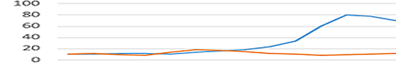

include "header_pop.html"

<section class="main">
	<button type="button" class="js-open-popup">팝업열기</button>
</section>

<!-- [D] 팝업 배경 -->
<div class="dimmed"></div>

<!-- [D] 팝업 : S -->
<section class="popup popup-wide-width">
	<h1 class="popup-heading">MSS 최근 CPU 사용률 (%)</h1>
	<div class="popup-content">
		
	</div>
	<div class="popup-bottom">
		<div class="right-float">
			<button type="button" class="btn-stroke-orange left-float left js-close-popup">확인</button>
		</div>
	</div>
</section>
<!-- [D] 팝업 : E -->

include "footer.html"